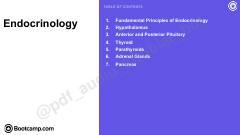

EEndokrin tizim fiziologiyasi va gormonal jarayonlar bo'yicha tibbiy qo'llanma.
Ushbu qo'llanma endokrin tizimning asosiy tamoyillari, gormonlar tasnifi va bezlarning ishlash mexanizmlarini qamrab oladi. Unda gipotalamus, gipofiz, qalqonsimon bez va boshqa endokrin organlarning fiziologiyasi hamda patologik holatlar, jumladan, diabet va giponatriemiya tahlil qilinadi.